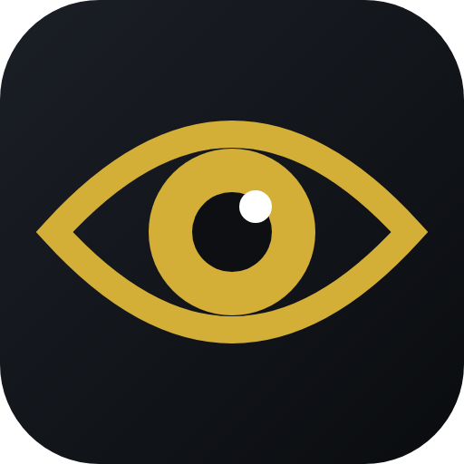
REGARD PUR
Mode d'emploi
Trier · Retoucher · Exporter vos photos
sur votre PC, sans internet
par JM.Dargère
Version 3.9.4 • novembre 2026
Sommaire
- 1Installer et ouvrir Regard Pur
- 2Ouvrir un dossier ou une carte SD
- 3La grille, le score et les raisons
- 4Filtres, séances, personnes, doublons, signature
- 5Tri automatique et « Garder les N meilleures »
- 6Comparer et vue en grand
- 7Retoucher : corriger, réglages, type de photo, mon style
- 8Lumière, couleur, niveaux, courbes, ciel, recadrage
- 9Amélioration IA (déflouter, restaurer, agrandir, débruiter, visages)
- 10Portrait, correcteur, RAW, rotation, corbeille, tirage
- 11Exporter
- 12Raccourcis clavier
- 13Questions fréquentes, langue, confidentialité
En trois étapes
- ① Trier : ouvrez un dossier ; Regard Pur analyse chaque photo et propose de garder les meilleures.
- ② Retoucher : corrigez les défauts en un clic, ou réglez finement (comme JM LAB PRO).
- ③ Exporter : copiez les photos gardées, retouchées si vous le souhaitez.
Vos originaux ne sont jamais modifiés. Tout se passe sur votre PC, sans internet (sauf l'option « Lieux GPS », que vous lancez vous-même).
1Installer et ouvrir
Deux façons
- RegardPur.zip : décompressez, puis double-cliquez sur RegardPur.exe (rien à installer).
- RegardPur_Installation.exe : installe le logiciel avec un raccourci sur le bureau.
Si Windows bloque le fichier
Regard Pur n'est pas vendu par Microsoft : Windows peut afficher un avertissement.
- Dans Edge : flèche ˅ à côté de « Supprimer » → Conserver quand même.
- Fenêtre bleue « Windows a protégé votre ordinateur » : Informations complémentaires → Exécuter quand même.
- Ou : clic droit sur le fichier → Propriétés → cocher Débloquer.
Premier lancement
Un petit guide en 5 écrans présente les trois étapes. Vous pouvez le revoir à tout moment avec le bouton ? en haut à droite, puis Revoir le guide.
Mode Simple ou Expert
En haut à droite : Simple montre l'essentiel, Expert tous les réglages fins. Les bulles ? expliquent chaque réglage au survol.
L'intelligence artificielle (déflouter, débruiter, visages…) est incluse dans le programme : c'est pour cela qu'il est assez gros (environ 600 Mo). Elle utilise la carte graphique du PC si possible.
2Ouvrir un dossier ou une carte SD
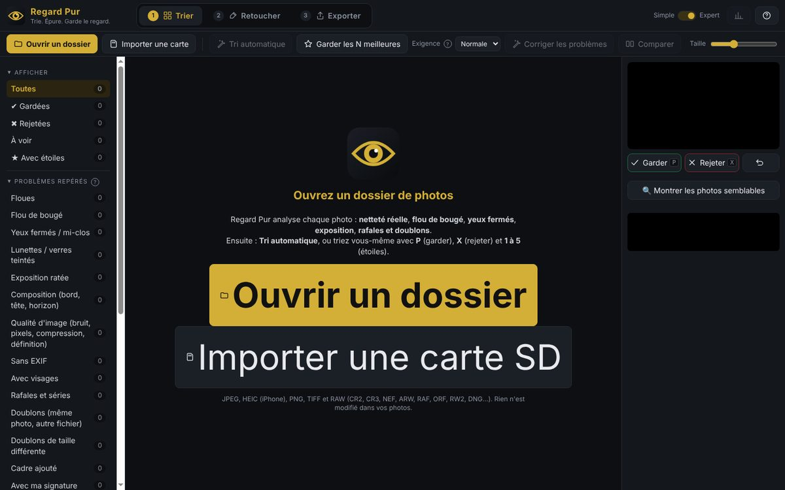
- Ouvrir un dossier : choisissez le dossier de la séance (les sous-dossiers sont inclus).
- Importer une carte SD : la carte est trouvée toute seule. Regard Pur copie les photos vers le PC (sous-dossier par date ou nom de séance, renommage au choix, copie de sécurité vers un autre disque, sans recopier celles déjà importées), puis lance le tri. Rien n'est effacé de la carte.
- Formats : JPEG, HEIC (iPhone), PNG, TIFF et RAW (CR2, CR3, NEF, ARW, RAF, ORF, RW2, DNG…).
L'analyse démarre aussitôt ; les vignettes apparaissent immédiatement, le temps restant est affiché en haut. Si vous rouvrez le dossier plus tard, vos choix sont retrouvés (ils sont gardés dans un dossier caché .regardpur).
3La grille, le score et les raisons
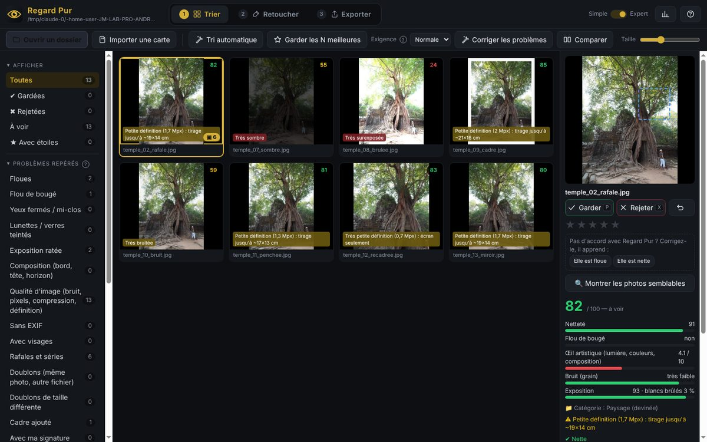
Chaque vignette porte un score sur 100. À droite, le panneau de la photo choisie explique pourquoi :
- Netteté mesurée à 100 % (sur les yeux s'il y a un visage), flou de bougé, yeux fermés / mi-clos, exposition (trop sombre, blancs brûlés), composition (horizon penché, tête coupée), œil artistique (lumière, couleurs, composition) ;
- qualité d'image : bruit, pixels, compression JPEG, petite définition, photo agrandie, sans EXIF ;
- lunettes (« vérifiez les reflets ») et verres teintés (yeux non lisibles : la photo n'est pas rejetée pour yeux fermés).
Pas d'accord ?
Sous le score, dites-le : Elle est nette / floue, Yeux ouverts / fermés. Regard Pur revoit tout le dossier avec votre avis et règle sa détection sur votre œil. Il apprend aussi de vos choix P / X.
4Filtres et classements
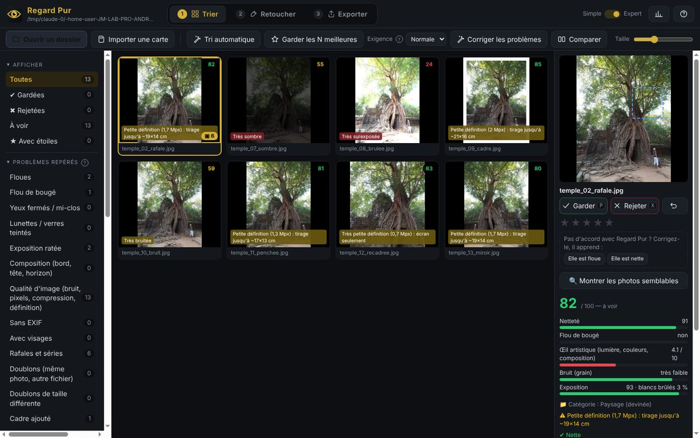
- Afficher : toutes, gardées, rejetées, à voir, avec étoiles.
- Problèmes repérés : floues, bougé, yeux, lunettes, exposition, composition, qualité, sans EXIF, rafales, doublons (même photo dans un autre fichier : recadrée, éclaircie, plus petite, encadrée), cadre ajouté, signature. Bouton Rejeter les doublons : garde l'original (sans cadre, la plus grande, la plus ancienne).
- Séances : les photos sont découpées selon les pauses (réglable) ; une séance avec beaucoup de personnes est une « séance de pose ».
- Personnes : les mêmes visages sont regroupés ; double-clic pour donner un nom.
- Options expert : catégorie de la séance, client, exigence, Ma signature… (votre filigrane est cherché dans les coins), Lieux GPS (ville et pays, internet), Apprendre mon style (Lightroom / DxO).
5Tri automatique et meilleures
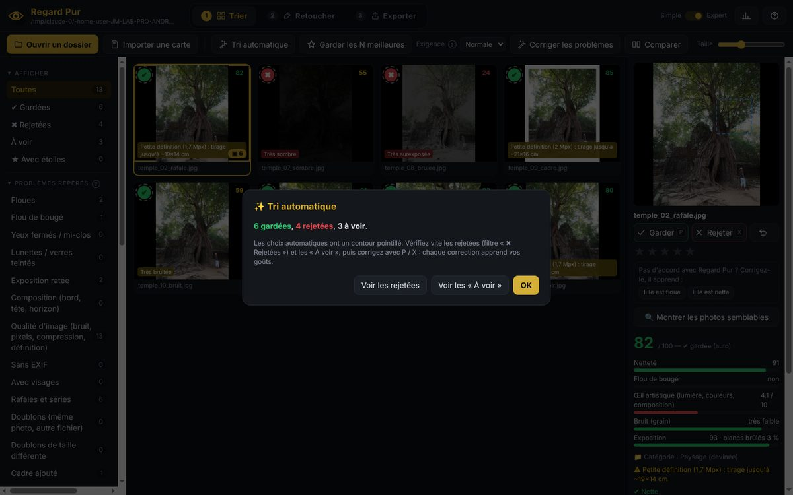
✨ Tri automatique garde les meilleures, écarte les ratées (avec la raison écrite) et laisse « À voir » les cas douteux. Les choix automatiques ont un contour pointillé ; vos choix à la main ne sont jamais changés. Exigence : Souple, Normale ou Stricte.
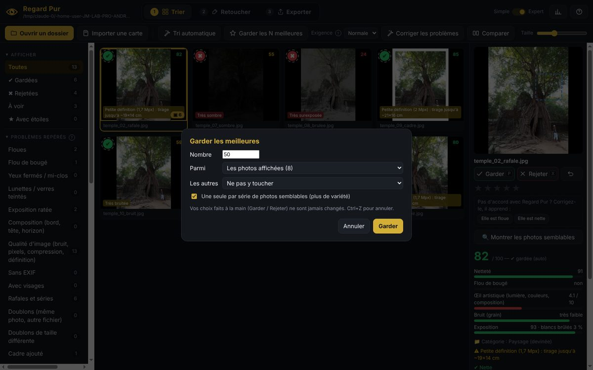
Garder les N meilleures : choisissez un nombre, dans les photos affichées ou dans chaque séance, une seule par série de photos semblables (doublons comptés une fois) ; les autres peuvent être laissées, mises « À voir » ou rejetées. Ctrl+Z annule.
6Comparer et vue en grand
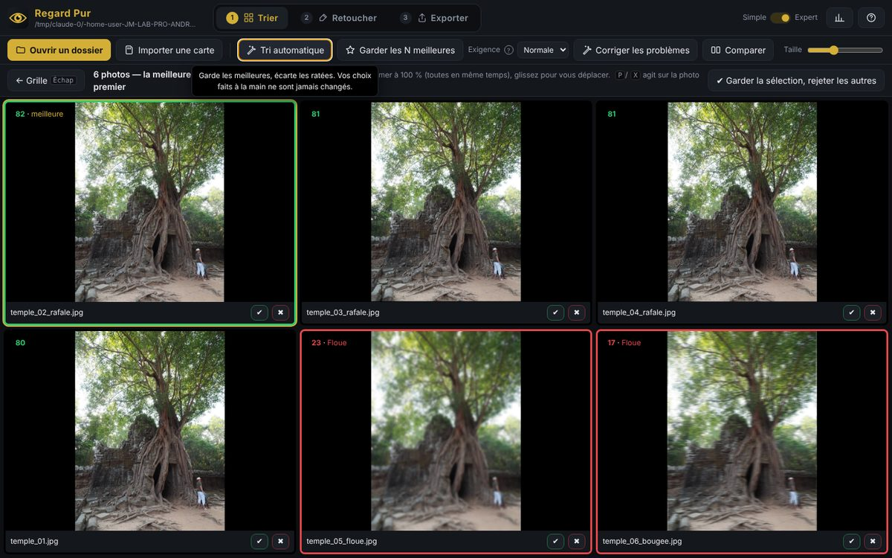
Comparer (C) : la sélection (Ctrl + clic) ou la série de la photo, côte à côte, la meilleure en premier. Un clic zoome à 100 % toutes les photos en même temps.
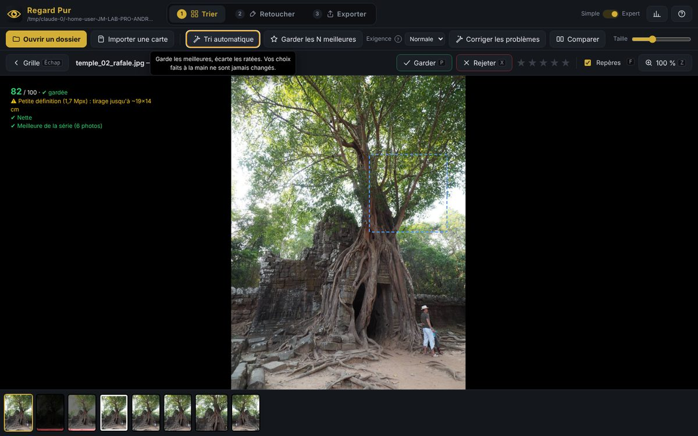
Vue en grand (Entrée) : Z zoom 100 % sur les yeux ou la zone nette, F montre les visages et la zone nette, gros plans des visages en haut à droite.
7Retoucher
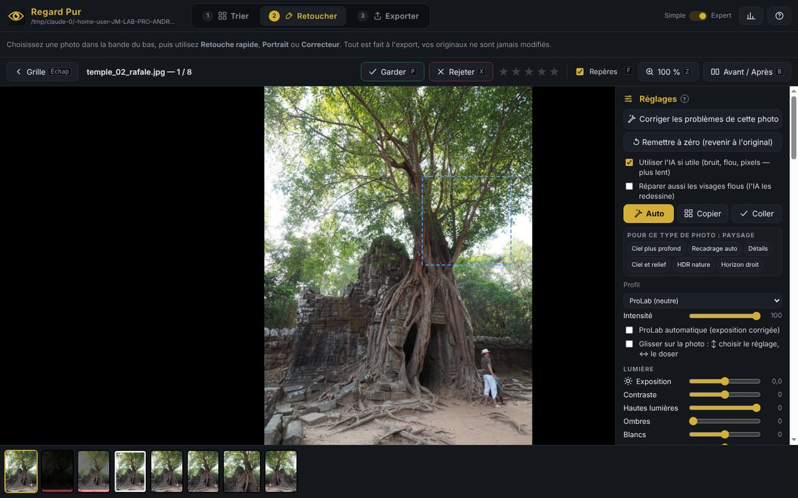
- Corriger les problèmes (photo ou sélection) : le bon outil pour chaque défaut, dans le bon ordre : bruit → flou → pixels / compression → exposition, couleur, horizon. Avec « Utiliser l'IA », chaque correction est mesurée avant / après et annulée si elle n'améliore pas. Les corrections que vous annulez souvent ne sont plus proposées d'office.
- Auto : ProLab automatique, correction selon le type de photo, peau protégée, vos habitudes.
- Pour ce type de photo : recettes en un clic selon portrait, mariage, famille, contre-jour, plage, paysage, nuit (ciel plus profond, HDR, détails, peau naturelle…) et Mon style, appris de Lightroom ou DxO.
- Copier / Coller les réglages, et « Appliquer ces réglages à » la sélection, la série, la personne.
- ↺ Remettre à zéro : la photo (ou la sélection) revient à l'original ; le correcteur au pinceau est gardé.
- Glisser sur la photo (case à cocher, désactivé au départ) : ↕ choisit le réglage, ↔ le dose (comme Snapseed).
8Réglages fins
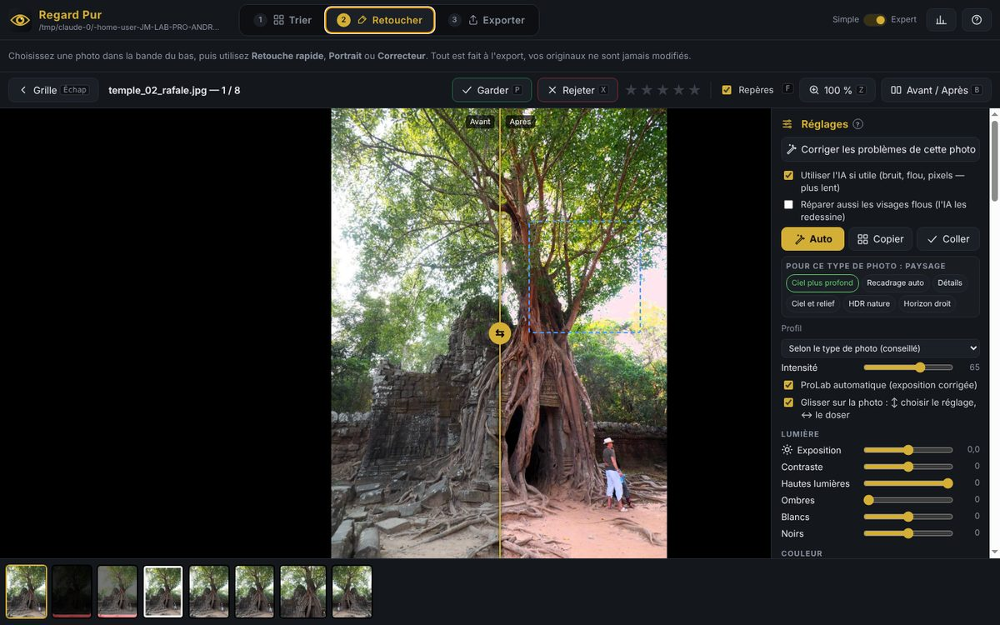
- Profil (rendu de JM LAB PRO) : « Voir la photo dans chaque profil » montre votre photo dans les 13 profils, un clic applique celui qui vous plaît ; ProLab automatique corrige l'exposition ; intensité ; Lumière ; Couleur.
- Niveaux (point noir, tons moyens, point blanc) et Courbe par couleur (toutes, rouge, vert, bleu).
- Ciel : assombrir, bleu, relief — le ciel est repéré tout seul.
- Recadrage : auto (sujet sur les tiers, aucun visage coupé), formats d'origine, 3:2, 4:5, carré, 16:9.
- Déflouter (classique, rapide) et les outils de JM LAB PRO : balance des blancs + pipette, détails, contraste des tons, HDR, théâtral, éclat glamour.
- Avant / Après : restez appuyé sur la photo pour voir la photo d'origine en entier, relâchez pour la version corrigée ; ou bouton Avant / Après, touche B.
9Amélioration IA
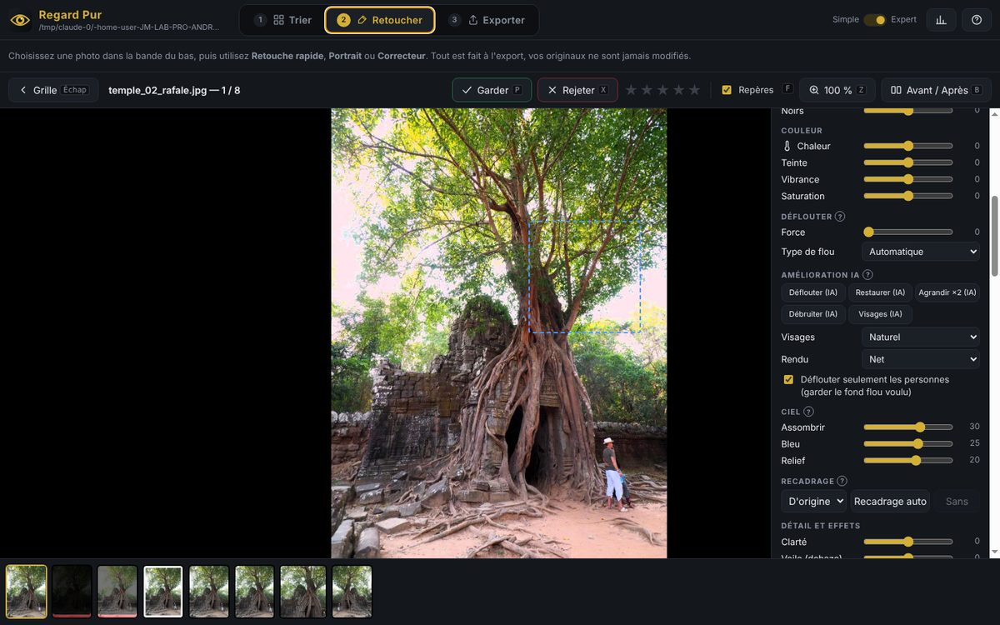
| Bouton | Pour quoi |
|---|
| Déflouter (IA) | Bougé et flou de mise au point. Option « seulement les personnes » : le fond flou voulu est gardé. |
| Restaurer (IA) | Photo pixelisée, très compressée ou abîmée (même taille). |
| Agrandir ×2 (IA) | Double la taille en reconstruisant les détails. Rendu Net ou Doux. |
| Débruiter (IA) | Grain des photos de nuit, en intérieur, ISO élevés. |
| Visages (IA) | Visages flous : yeux, peau, bouche. L'IA redessine : comparez (force Naturel / Marqué / Complet). |
Le résultat est enregistré à part ; vos réglages s'appliquent par-dessus ; Revenir à l'original annule. Durée : quelques secondes à quelques minutes selon la photo et le PC.
10Autres outils
- Retouche portrait : peau (garde le grain), acné, taches, cernes, rides, blanc des yeux, iris, dents, lèvres, éclat, fond (flou, sombre, désaturé), préréglages Naturel, Éclat, Glamour, Mariage, Homme, Enfant.
- Correcteur : peignez sur une tache ou un objet, la zone est reconstruite.
- Vrais RAW : en Retoucher, le RAW est développé depuis les données du capteur (balance des blancs de l'appareil, hautes lumières récupérées) ; l'export part de ce développement.
- Rotation : boutons ↺ ↻ ou touches [ ] (appliquée à l'export), Corbeille Suppr (récupérable), Copie rapide S vers un dossier choisi une fois (Maj+S pour changer).
- Contrôle avant tirage (mode Expert, panneau de droite) : du 10×15 au 50×75 cm, ✓ bon (≥ 250 dpi), ≈ juste, ✗ trop petite, ✂ visage coupé par le recadrage.
- Lieux GPS : ville et pays des photos géolocalisées (OpenStreetMap, internet, coordonnées arrondies).
11Exporter
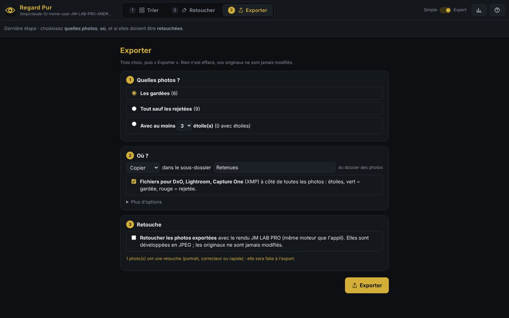
- Quelles photos ? Les gardées, tout sauf les rejetées, seulement les photos corrigées ou retouchées, ou avec au moins N étoiles.
- Où ? Copier ou déplacer dans un sous-dossier ; fichiers XMP pour DxO, Lightroom, Capture One (étoiles, gardées en vert, rejetées en rouge) ; ranger les rejetées.
- Retouche : les photos corrigées sont exportées telles que vous les voyez dans ② Retoucher (profil, ProLab, IA, portrait, ciel, recadrage, rotation) ; les autres sont copiées telles quelles. Le profil se choisit dans Retoucher, pas ici. Nommage catégorie_client_001 ; joindre l'original si vous voulez.
Rien n'est effacé. Un bilan s'affiche à la fin, avec le temps gagné estimé.
12Raccourcis clavier
| Touche | Action |
|---|
| P / X / U | Garder / Rejeter / Annuler le choix |
| 1 … 5 | Étoiles (même chiffre = enlever) |
| ← → ↑ ↓ | Photo précédente / suivante, ligne du dessus / dessous |
| Entrée / Échap | Vue en grand / revenir à la grille |
| Z / F | Zoom 100 % / montrer visages et zone nette |
| C / Espace / G | Comparer / ouvrir la série / regrouper les séries |
| B (ou appui long) | Avant / Après : photo d'origine en entier |
| [ ] | Tourner à gauche / à droite |
| Suppr | Mettre à la corbeille |
| S / Maj+S | Copie rapide / changer de dossier |
| Ctrl + clic / Maj + clic | Sélectionner plusieurs photos / une suite |
| Ctrl + A / Ctrl + Z | Tout sélectionner / annuler |
13Questions fréquentes
Mes originaux sont-ils modifiés ?
Jamais. Les retouches sont faites à l'export, dans de nouveaux fichiers.
Une photo nette est jugée floue (ou l'inverse)
Utilisez Pas d'accord : Regard Pur se règle sur votre œil pour tout le dossier.
L'IA est lente
Sans carte graphique, déflouter une grande photo peut prendre plusieurs minutes. Les petites photos et « Restaurer » sont rapides.
Comment reprendre mon style Lightroom ou DxO ?
Options expert → Apprendre mon style → choisissez un dossier retouché (.xmp, JPEG exportés, .dop). « Mon style » apparaît dans Retoucher.
Langue
Français ou anglais selon Windows ; bouton English / Français dans l'aide ?.
Confidentialité
Aucune photo ne quitte votre PC. Seule l'option Lieux GPS, lancée par vous, envoie des coordonnées arrondies (environ 1 km) à OpenStreetMap.